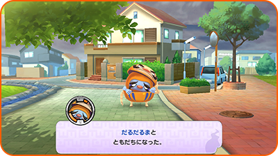
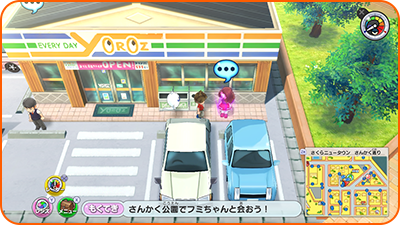

Introducción
Empezar a jugar
La primera vez que juegues, selecciona "Nueva partida" en la pantalla de título. Si ya tienes datos de guardado creados anteriormente, selecciona "Continuar" para seguir jugando desde donde lo dejaste.
Guardar el progreso
Selecciona "Diario" en el menú principal, o visita a Ignóculo en los Superhíper u otros lugares, para guardar tu progreso actual.
- ※ Se pueden crear 3 partidas por usuario.
- ※ Hay lugares en los que no es posible guardar, como aquellos donde aparecen Yo-kai enemigos.
Si cambias la hora de la consola...
Ten en cuenta que cambiar la hora de la consola puede impedirte usar la expendekai y aplicar restricciones durante varios días a determinadas funciones, como los eventos diarios.
Como jugar
Controla al personaje principal y explora Floridablanca. Durante los combates, ayuda a tus amigos Yo-kai a derrotar a los enemigos.
Hacer amigos Yo-kai
Algunos de los Yo-kai enemigos a los que derrotes en combate querrán hacerse tus amigos.
Cuando entables amistad con Yo-kai, podrás darles un apodo de un máximo de ocho caracteres.
- ※ Hay ciertos Yo-kai con los que no puedes entablar amistad.
- ※ También puedes hacer amigos Yo-kai a través de eventos, de misiones o de la expendekai.

Misiones
Si hablas con personajes que tengan el iconoosobre la cabeza podrás realizar misiones. Cuando las completes, recibirás dinero, objetos y puntos de experiencia.

| Historia | Al completarlas, la historia avanza. |
|---|---|
| Peticiones | Son misiones que te encargan los habitantes de la ciudad. Al completarlas, recibirás recompensas como experiencia y objetos. |
| Tareas | Tras completarlas, recibirás experiencia y otras recompensas. Además, después de que pase cierto tiempo, la misma misión volverá a aparecer. |